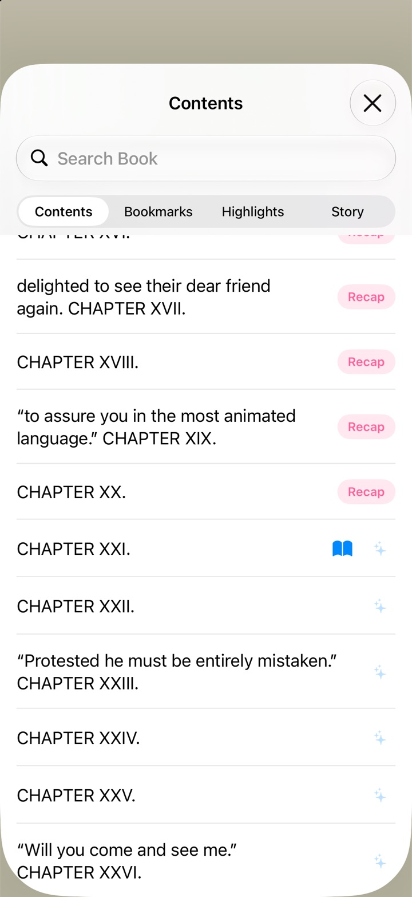
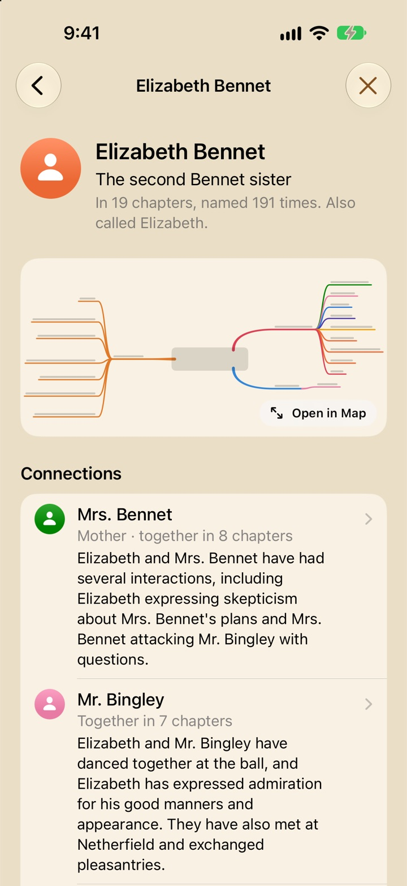
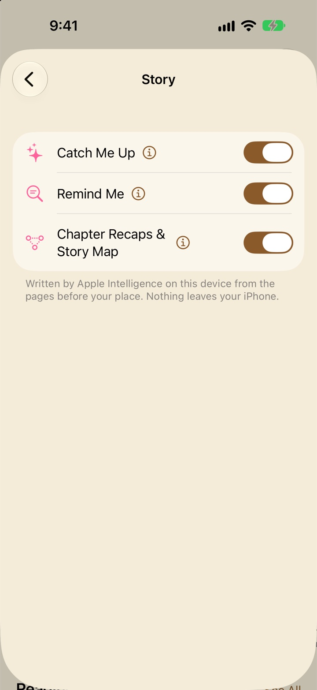

Recaps, Story Map and the AI
How Libretto keeps track of the story for you: what Apple Intelligence reads, where it runs, how it stays behind your place, and how to get the most from Catch Me Up, Remind Me, Chapter Recaps and the Story Map.
What the AI does for you
Long books are full of people, and life gets in the way of reading. Libretto’s story features are for the evening you open a book after a week away and can’t remember who anyone is. There are four of them, each with its own switch in Settings → Story:
- Catch Me Up writes a recap of what you’ve read, from the last few pages to the whole story so far. See Catch Me Up.
- Remind Me says who or what a name is, from the places it came up before. See Remind Me.
- Chapter Recaps sum up each chapter once you’ve finished it, and keep The Story So Far up to date. See Chapter Recaps.
- The Story Map lays out the people, places, chapters and your highlights as a mind map, with a profile for everyone and a note on every connection. See The Story Map.
The same on-device model also answers Siri’s “Catch me up in Libretto”, and can add a few sentences on what happened to the journal entry that Get Today’s Reading makes (both in Widgets, Siri and Shortcuts).
Read-Along isn’t one of these. Matching an audiobook to its ebook uses Apple’s speech recognition, which doesn’t need Apple Intelligence (see Read-Along and audiobooks).
Where the AI runs
Every recap, answer and map is written by the language model that’s part of Apple Intelligence. It lives on your iPhone or iPad and runs on its chip. Libretto gives it the book’s text, a piece at a time, and it writes back. Nothing goes to a server: not to Libretto (there isn’t a Libretto server), not to a cloud AI, not even to Apple. Because the model is on the device, writing a recap doesn’t need an internet connection.
Which devices can write recaps
Writing needs Apple Intelligence: an iPhone 15 Pro or later, or an iPad with an M-series or A17 Pro chip, with Apple Intelligence turned on in the Settings app under Apple Intelligence & Siri. When it can’t run, Settings → Story says why at the top, for example:
- “Turn on Apple Intelligence in Settings → Apple Intelligence & Siri to use Catch Me Up.”
- “Apple Intelligence is still getting ready on this iPhone. Try again in a little while.” (Just after it’s turned on, the model is still downloading.)
- “This iPad doesn’t support Apple Intelligence, which Catch Me Up uses.”
On a device that doesn’t support it at all, the ✨ button and Remind Me don’t appear. Apple Watch and Apple TV don’t run Apple Intelligence either.
On a device without Apple Intelligence
You can still have recaps and Story Maps there. They’re just written somewhere else:
- With Sync with iCloud on, whatever your iPhone or iPad with Apple Intelligence writes arrives on your other devices by itself, for the same book (the same file, so its chapters line up). It shows everywhere it would on the device that wrote it: Recap buttons in Contents (for the chapters that have one), the Recaps page, the Story Map, profiles and Book Details. The Recaps page says this device can’t write its own, and has no Write Now or Write Them Again. What you read there still counts, and goes back to your other devices. See Sync with iCloud.
- On Apple TV, Chapter Recaps, the Story Map and People and Places show what your iPhone or iPad wrote, for the chapters you’ve read on any device.
- With Sync with iCloud off, send them yourself. On the device that wrote them, open the book’s Recaps page and choose ⋯ → Send to Another Device…, then AirDrop the file (or send it by Messages or Files) to the device with the same book. Open it in Libretto there and it asks Add Recaps to “…”?: Add Recaps counts the chapters read on the other device as read here too, so their recaps show; Only Chapters Read Here shows only what you’ve read on this device. Send them again later to bring it up to date. Recaps for another edition of the book won’t line up, and Libretto says so.
How the writing works
The model is small (about three billion parameters, small enough to fit on a phone) and it can only take in a couple of thousand words at a time. So Libretto works through a book the way you might with a notebook beside you:
- It reads in pieces. A short stretch goes to the model whole. Anything longer is read a piece at a time, and the model writes a short note on each (up to about 100 words).
- It writes from the notes, a paragraph for each stretch of chapters. Asked to sum up everything at once, a small model mostly remembers the end; a paragraph at a time, every part gets its due.
- Notes are kept with the book on your device, so a chapter is only read once. Catch Me Up and Chapter Recaps share them. That’s why a book’s first recap takes longest and later ones are much quicker.
- It’s asked for its own words. Left to itself, a small model sometimes hands back a page of the book’s dialogue. An answer that copies the book is asked for again, and a note that still copies is left out.
- Answers are tidied: repeated sentences, lead-ins like “Here is a summary:”, and a sentence cut off at the end are removed.
For a chapter recap, the model is asked four short questions about the chapter: what happens (in three to five short sentences of its own words), who’s who, what each of the main people does, and which places it’s set in. Once there are two chapters, it writes The Story So Far from the chapter recaps. Then it writes the notes on connections you see on the Story Map.
When it runs
Catch Me Up and Remind Me start the moment you ask. Chapter Recaps are written in the background, a chapter at a time, one book after another, but only while Libretto is open on the screen; leave the app and they wait for you to come back. When you ask for a Catch Me Up or Remind Me, the background writing steps aside so yours comes first.
The content filter
Apple Intelligence has a content filter. Libretto uses its most permissive setting, the one meant for working with existing text (novels have deaths and fights in them), but it can still decline a violent or adult passage. When it does, that part is left out and the recap says so: “Some passages were left out: Apple Intelligence wouldn’t summarize them.” A chapter it won’t recap at all says “Apple Intelligence wouldn’t recap this chapter”, with Try Again.
Spoilers: what counts as read
Unless you ask for a chapter ahead, Libretto never gives the model anything past where you’ve got to. There are two rules, one for each kind of feature:
- Catch Me Up and Remind Me read up to your place: everything before the first word on your screen (in a PDF, the pages before the one you’re on), and nothing after it.
- Chapter Recaps and the Story Map go by what you’ve actually read. Libretto keeps track of the stretches of the book you’ve been through, and only those chapters are recapped and put on the map.
What counts as read
- Turning pages, scrolling and listening along with Read-Along all count.
- A chapter counts once you’ve been through about three-quarters of it, so skimming past a few pages doesn’t stop it counting. It’s recapped once you’ve finished it and moved on.
- Jumping doesn’t count. Going somewhere from Contents, a search result, a link or a bookmark reads nothing on the way, so peeking at the ending leaves the chapters you skipped unread.
- The first time you open a book with Chapter Recaps on, everything before your place counts as read (all of it, for a book you’ve finished).
- Listening to the book’s paired audiobook counts too, even with the book closed: the next time you open it, everything the audiobook moved past is read.
- With Sync with iCloud on, chapters you read on your other devices count here as well.
- Browsing (Just Browse, or a visit to a highlight from the Notebook) doesn’t count.
Asking about something ahead
In Contents, a chapter you haven’t read has a faint ✨ where read ones have Recap. Tap it and Libretto asks first: Recap a Chapter You Haven’t Read? (“You haven’t read … yet, so its recap may give away what happens”), with Recap It and Cancel. A chapter you’re partway through asks Recap the Chapter You’re Reading?, since its recap covers the whole chapter.
A recap you asked for ahead of your place stays on its own. On the Recaps page it says “Ahead of you” and keeps the recap behind Show Recap, and its people and places stay off the Story Map and out of the profiles until you’ve read the chapter.
Catch Me Up
The pink ✨ in a book’s top bar is Catch Me Up: tap the middle of the page for the menu, and it’s the first of the buttons on the right. Tap it and a sheet opens. Libretto finds your place, reads what it needs, and the recap appears as it’s written.

You don’t have to remember it’s there. Open a book you last read a day or more ago and a pill over the page offers it: “Away 6 days · Catch Me Up”. Tap it, or ✕ to read on; it goes by itself after a few page turns.
How far back it goes
A tap recaps as much as your time away calls for, counted from the end of your last reading session with the book (or its paired audiobook) to now. The sheet says how long it had been: “It had been 3 days since you last read this.”
- Under a day: The Last Few Pages
- About four printed pages before your place (a PDF’s last four pages). For picking up a thread after a busy afternoon.
- A day to under five days: The Last Chapter and This One
- The chapter before this one, and this one up to your place.
- Five days or more: The Story So Far
- Everything up to your place, a paragraph for each stretch of the book, followed by a Who’s who of the main characters.
Choose for yourself
Touch and hold the ✨ to pick: Last Few Pages, This Chapter So Far, Last Chapter and This One or The Story So Far. Once the sheet is open, its Recap… menu (top left) switches to another.
Listen to it
Once the recap is written, Listen beside its heading reads it aloud, a paragraph at a time, marking each word as it goes. It turns into Pause and Resume. An audiobook or Read Aloud that was playing pauses for it, and closing the sheet stops it. It uses Read Aloud’s voice and speed, set in Settings → Listening → Read Aloud (see Read Aloud).
What counts as a chapter
Chapters are the entries in the book’s contents. A PDF uses its outline, or ten pages at a time if it hasn’t one. The cover, copyright page, contents, acknowledgments and the like are left out of The Story So Far, and a very short last chapter (a part’s title page, say) brings the one before it along.
How long it takes
The first recap in a book takes longest, because Libretto is reading those chapters for the first time: a first Story So Far a third of the way into a novel can take a minute or two. The sheet shows how far it’s got (“Reading “Chapter 3” · 2 of 5”). The notes it makes are kept, so the next recap is much quicker.
Where you’ll find it
- In EPUBs and other text books, and in PDFs (not comics).
- In Now Playing, for an audiobook paired with its ebook: it recaps the book up to the words being read, without opening it. The audiobook pauses while the sheet is up, and carries on after if it was playing.
- From Siri: “Catch me up in Libretto”.
- On iPhone Duo, in the tabletop deck too.
Remind Me
Meet a name you half remember? Select it, then choose Remind Me (✨) in the menu that appears, after Highlight and Add Note. On an iPhone held upright the menu shows icons only, so look for the sparkles. The first time you select text, a tip points it out.
The Remind Me sheet has the name at the top and how often it’s come up: “Mentioned 14 times before here, first in “Chapter 2”.” (or “This is the first time it comes up.”). Then, as it’s written:
- Who or what it is, in a short paragraph. It’s kept shorter for something that’s barely come up, so the model isn’t tempted to fill the gaps.
- So Far: up to six things that have happened with them, in order, the latest last.
- Go to First Mention turns to the first time it came up. The reader’s Back button brings you back to where you were.
- In the Story Map, when Chapter Recaps are on and the name is on the map: who they are, who they’re connected to, and a tap for their profile.
If the name is already on the book’s Story Map, Remind Me skips the wait and opens their profile straight away.
How it finds the answer
Libretto finds every earlier mention: the whole name, in any case, and for a full name the surname on its own (“Rochester” for “Edward Rochester”). It reads the passages around up to 60 of them (the first few, the latest dozen, and some in between), takes notes on them a run at a time (“Reading where it comes up · 2 of 3”), then writes the answer from the notes and the latest passages. It only ever looks before the words you selected. It usually takes a few seconds; a name that’s everywhere takes longer.
Remind Me works in EPUBs and other text books and in PDFs, and has its own switch in Settings → Story.
Chapter Recaps
Finish a chapter and move on, and Libretto recaps it in the background, then adds its people and places to the book’s Story Map. The chapter you just finished goes first, then any earlier ones that don’t have a recap yet, so a book you were already partway through fills in a few chapters at a time. Remember they’re only written while Libretto is open (see When it runs). Chapter Recaps work in EPUBs and other text books, not PDFs or comics.
Where to find them
- Contents (the list button in the menu) has Recap beside every chapter you’ve read; it opens that chapter’s recap. Chapters you haven’t read have a faint ✨ that asks first.
- Story, at the top of Contents, is the whole Recaps page inside the sheet, with what’s being written right now (“Recapping “Chapter 7”…”) and Full Screen.
- ⋯ → Recaps & Story Map in a book opens the Story view over the whole screen.
- Book Details, once the book has recaps, has a Story card with the start of The Story So Far, the five people named most, and Recaps and Story Map buttons, without opening the book.
Once a book’s first recap is written, a tip in Contents points to Story.


The Recaps page
- The Story So Far, written from the chapter recaps, a paragraph for each stretch of the book. A long one starts cut short, with More. While it’s being brought up to date it says how far it goes (“As far as “Chapter 12””).
- Story Map: a small picture of the map. Tap it to open the map.
- People and Places: everyone and everywhere so far, most named first. Tap one for their profile.
- Chapter by Chapter: each chapter’s recap with its people and places, Map This Chapter, and Go to Chapter, which takes you back into the book there. Tapping anywhere else on a chapter maps it too.
A chapter without a recap says why:
- “Waiting to be written.”, with Write Now to put it first.
- “You’re reading this one. It’s recapped once you finish it.”
- “Ahead of you”, with its recap behind Show Recap.
- “Apple Intelligence wouldn’t recap this chapter. Its content filter can stop it at violent or adult scenes.”, with Try Again.
Starting over, and sending them
The ⋯ menu at the top of the Recaps page has Write Them Again, which asks first, then throws away every recap and the Story Map for the book and writes them again, a chapter at a time, on your other devices too. With Sync with iCloud off, it also has Send to Another Device… (see On a device without Apple Intelligence).
The Story Map
The Story Map is the book’s cast and world, drawn from the chapters you’ve read. Open it from the Story Map card on the Recaps page, the Story Map button in Book Details, or Open in Map on a profile. Across the top, Map, Outline and Web show it three ways, and Libretto remembers the one you like. Until a chapter is recapped, it says “The map fills in as you finish chapters and they’re recapped.”


Map: a mind map of the book
The book sits in the middle, as a card with its cover, a ring for how far you’ve read, and a count (“21 of 62 chapters read”). Four branches grow from it:
- People (red), on the right, gathered into families: “The Bennets” when two or more share a surname.
- Places (blue), on the right.
- Chapters (orange), on the left.
- Highlights (purple), on the left: every highlight you’ve made, sorted into its chapter, in its own ink with your note under it. A highlight’s card has Go to Highlight, and chips for the people and places it mentions.
Drilling in
Tap a branch and it moves into the middle with everything on it around it. Tap a person, place or chapter, on any level, for a map of its own:
- A person’s map has their Connections, Places, Chapters (what they did in each) and the Highlights that name them.
- A chapter’s map (also Map This Chapter on the Recaps page) has What Happens and your highlights on one side, and its People (each with what they did) and Places on the other.
The way you came is shown across the top (“Lonesome Dove › People › Gus McCrae”); tap a step to go back to it. On these maps, branches start folded (› at the end of a line) and long lists show their first few (“14 more”): tap to open one, and again to fold it. The card at the bottom is for whatever you picked, with its Profile or Recap.
Pinch to zoom, drag to move around, and double-tap the background to see it all. On a phone the map is wider than the screen: it opens on the book, and you can pan either way. The ⋯ menu at the top has Show All, Open Every Branch and Fold Branches (on a person’s, place’s or chapter’s map), and The Whole Story or One Chapter.
Rings and tags
Rings mean something. A chapter’s is ticked once it’s recapped (partly filled for the one you’re reading). A person’s or place’s shows how much of what you’ve read they’re in. The four most named people each get a tag in their own color, shown beside them and on every chapter, place and highlight they’re in, so you can see at a glance whose story each chapter is.
A note on every connection
At the end of every branch is a short note. Under a connection, it’s what has passed between the two so far (“Mr. Collins has proposed to Elizabeth, and she has refused.”), with what they are to each other in a pill where the chapters agree (“Mother”, “Sibling”). Under a person at a place, it’s what they do there. Notes are written after the chapters, the main characters’ first, then any you open. Until one is written, the map shows what the recaps say of the two together, so every device has something to show. A note is written again as the two share more chapters.
Profiles
Tap a name anywhere for their profile: who they are (what most of their latest chapters agree on), how many chapters they’re in and how often they’re named, other names they go by (“Also called …”), a small map of them and their connections (Open in Map), Connections (most time together first, each with the relationship and its note), and Chapter by Chapter: what they did in each.
Outline
The same tree as a list with disclosure triangles, for when you’d rather read than pan. Each person and place says who or what they are, each connection has its pill and note, and each highlight shows its whole passage in its ink. Tap a person, place or chapter for its profile or recap, or a highlight to go to it in the book.
Web
People (a figure) and places (a pin) as a web, each sized by how often they’re named, with lines where a chapter connects them: solid with an arrow and a label for a relationship (“mother of”, shown when you zoom in or pick one end), gray for two people who meet (darker the more chapters they share), and dashed for a person at a place. Drag a name and everything tied to it follows. The menu turns People, Places and Chapters on and off, and Everyone shows the whole cast rather than the most named. It settles into the same layout every time.
Everyone has their own color
Each person and place keeps one color everywhere: their chip and profile, their ring, line and branch on the map, their tag, and their spot on the web. Colors are handed out as people first appear in the book, never by rank, so nobody is repainted as you read on.
Full screen, and side by side on iPad
The Story view fills the screen in the book’s page theme, with ✕ to go back to the page. On an iPad (or iPhone Duo opened up, or a big iPhone on its side) it’s two panes: the Recaps page on the left and the map filling the rest. They follow each other: open a chapter or a profile on the left and the map shows it; tap Profile or Recap on the map and it opens on the left. The sidebar button at the map’s top left (or ⌃⌘S on a keyboard) folds the Recaps column away to give the map the whole screen.
How good is it?
Usually right on the plot and the main people. But the model is small, and now and then it mixes two characters up, gives something one person did to another, adds a detail that isn’t in the book, or blurs who said what. Every recap and answer says so at the bottom: “It can get things wrong.”
What Libretto does to keep it honest
- Only names the chapter has. The model knows famous books, and would happily bring in people from chapters to come. A name the chapter’s own text doesn’t contain is dropped.
- Only real places. A place has to be a proper name in the book; “the vestibule” or “Mr. Bennet’s room” doesn’t make the map.
- Careful with names. People are joined across chapters by name: “Darcy” is “Mr. Darcy”, but “Mrs. Bennet” is never “Mr. Bennet”, and a short name that could be two people gets its own entry.
- Agreement over the latest word. Who someone is comes from what most of their latest chapters agree on, not from the last thing said about them.
- Relationships aren’t guessed. The model is never asked outright how people are related (when it was, it invented). A relationship comes from what the recaps already said, shows only where the chapters agree, and one said only once about two people who are together in four or more chapters is treated as a slip.
- Notes stay in their lane. A connection note that names anyone or anywhere not in the chapters it was written from is thrown out, and the recaps’ own lines show instead.
Reading it with a critical eye
- Things that show up across several chapters are more likely right than one surprising detail.
- Counts help: “Together in 6 chapters” is a real bond; “Together in 1 chapter” may be a passing meeting.
- If two people seem merged, the profile’s “Also called” line shows which names were joined.
- Check against the book: Go to First Mention, Go to Chapter and Go to Highlight take you to the page.
- For a famous book, remember the model may know more than you’ve read. Libretto drops what the chapters don’t say, but if something feels like it’s from further on, trust the page.
- If a book’s recaps went badly wrong, Write Them Again on the Recaps page starts over.
Settings → Story

All three switches are in Settings → Story, with an ⓘ beside each that explains it. Where Apple Intelligence can’t run, a notice at the top says why (see Where the AI runs).
- Catch Me Up On
- The ✨ button in books, the “Away · Catch Me Up” pill, and ✨ in Now Playing for a paired audiobook.
- Remind Me On
- Remind Me in the menu for selected text.
- Chapter Recaps & Story Map On
- Writes a recap of each chapter you finish, in the background, and builds the Story Map. Off, no new recaps are written, and Story, the Recap buttons and the Story card are hidden (recaps already written are kept).
Listen in Catch Me Up uses the voice and speed in Settings → Listening → Read Aloud. For every setting in one place, see Every setting.
Questions
Does Libretto send my books to Apple or an AI company?
No. The model that writes recaps runs on your iPhone or iPad, and the book’s text never leaves it. Libretto has no server. The only copies of the recaps themselves are the ones Sync with iCloud keeps in your own iCloud, or files you send yourself.
Why don’t I see the pink sparkles?
Check Settings → Story: Catch Me Up may be off, or a notice at the top may say Apple Intelligence can’t run (it’s off, still downloading, or the device doesn’t support it). Also, the ✨ is in the top bar, which shows when you tap the middle of the page, and it doesn’t appear in comics.
I finished a chapter. Why isn’t it recapped yet?
A chapter is recapped once you’ve read most of it and moved on to the next, and only while Libretto is open on screen. The chapter you just finished goes first, but a book you were partway through has earlier chapters to catch up on too. On the Recaps page, Write Now puts a waiting chapter first.
I jumped to the last chapter to check something. Did I spoil my Story Map?
No. Jumping reads nothing on the way, so the chapters you skipped stay unread, and their recaps aren’t written or shown. Just don’t turn pages through the ending, and don’t ask Catch Me Up for The Story So Far while you’re there: it reads everything before your place.
Can I have recaps on my older iPad?
Yes, written by a device that has Apple Intelligence. With Sync with iCloud on, they arrive by themselves for the same book. With it off, use Send to Another Device… on the Recaps page. The older iPad can’t write recaps itself, so it shows what the other device wrote.
Does it work with PDFs?
Catch Me Up and Remind Me do. Chapter Recaps and the Story Map are for EPUBs and other text books.
Why does the first recap take so long?
The first time, Libretto reads each chapter it needs and takes notes on it, a piece at a time. Those notes are kept with the book, so later recaps reuse them and come back much faster.
It said part of the book was left out. Why?
Apple Intelligence’s content filter declined a passage, usually a violent or adult scene. The rest of the recap is still written. For a whole chapter it wouldn’t recap, Try Again sometimes gets through.
A recap got someone wrong. Can I correct it?
You can’t edit recaps. They’re a memory aid, so check anything important against the page with Go to Chapter or Go to First Mention. If a whole book went wrong, Write Them Again starts it over.
Does the Story Map work on Apple Watch or Apple TV?
Apple TV shows the Chapter Recaps, Story Map and People and Places your iPhone or iPad wrote, for the chapters you’ve read on any device. Apple Watch doesn’t show them. Neither can write recaps. See iPad, Duo, Watch and TV.
Can I turn it all off?
Yes. Each feature has its own switch in Settings → Story. Turning off Chapter Recaps & Story Map stops all background writing.